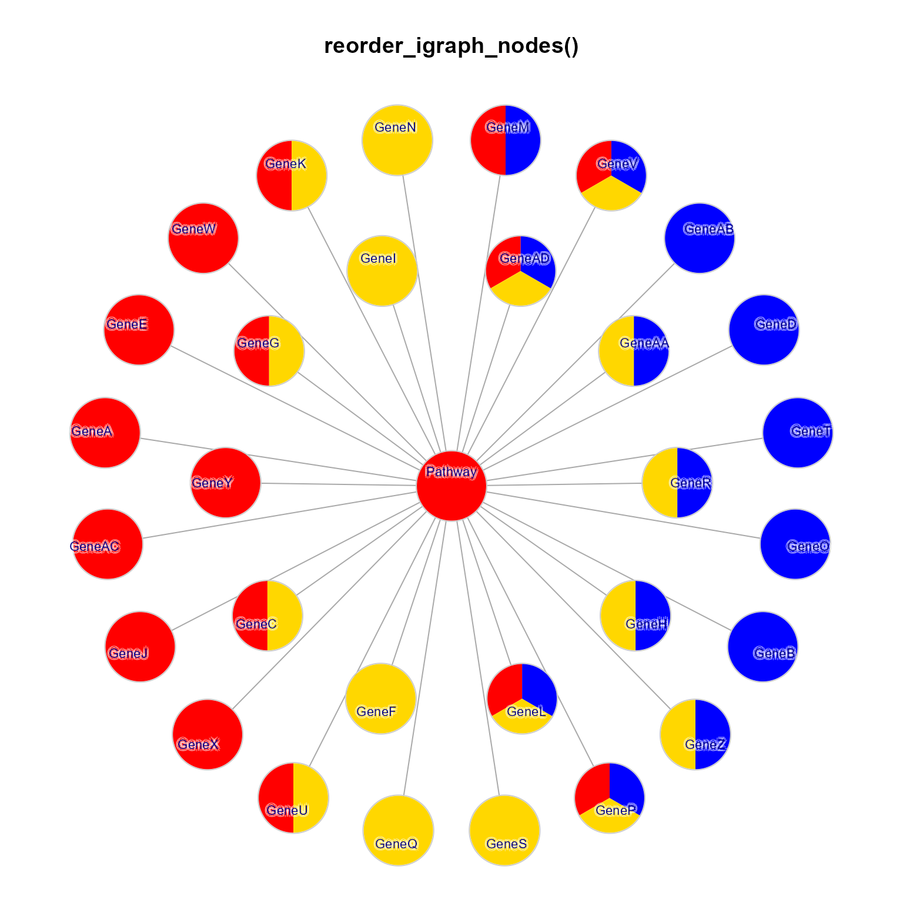
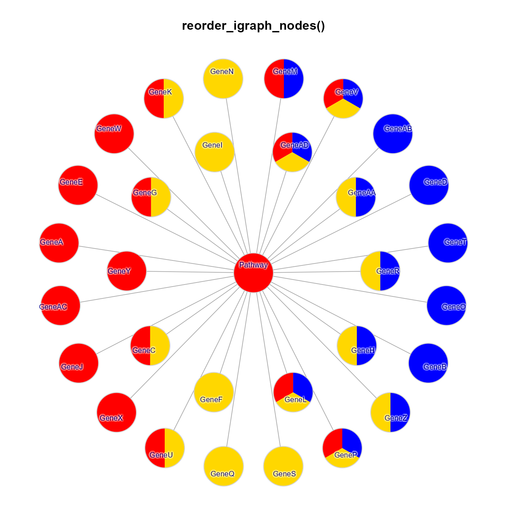

Re-order igraph nodes
reorderIgraphNodes(
g,
sortAttributes = c("pie.color", "pie.color.length", "coloredrect.color", "color",
"label", "name"),
nodeSortBy = c("x", "y"),
layout = NULL,
colorV = NULL,
verbose = FALSE,
...
)Arguments
- g
igraph object
- sortAttributes
character vector of node attribute names, to be applied in order when sorting nodes.
- nodeSortBy
character vector containing
"x"and"y"indicating the primary axis used to sort nodes.- layout
numeric matrix of node coordinates, or function used to produce layout coordinates. When layout is
NULL, this function tries to use graph attribute"layout", otherwise therelayout_with_qfris called.- colorV
optional
character vectorthat contains R colors, used to order the colors in attributes such as"pie.color"and"coloredrect.color".- verbose
logical indicating whether to print verbose output.
- ...
additional arguments are ignored.
Value
igraph with nodes positioned to order
nodes by color. The layout coordinates are stored in
the graph attribute "layout", accessible with
g$layout or graph_attr(g, "layout").
When there are not multiple nodes sharing
the same neighbors, the original igraph object is
returned, with the addition of layout coordinates.
Details
This function takes an igraph and a layout in the
form of coordinates, or a function used to produce
coordinates. It repositions nodes within equivalent
positions, ordering nodes by color along either the
"x" or "y" direction.
Equivalent node positions are those with the same
neighboring nodes. For example if node "A" and
node "B" both have neighbors c("D", "E", "F")
then nodes "A" and "B" are considered equivalent,
and will be reordered by their color.
This function is particularly effective with concept network (Cnet) graphs, where multiple terms may be connnected to the same concept. For MultiEnrichmap, it typically works when multiple genes are connected to the same pathways. When this happens, the genes are sorted to group the colors.
See also
Other jam igraph functions:
cnet2df(),
cnet2im(),
cnetplotJam(),
cnetplot_internalJam(),
color_edges_by_nodes_deprecated(),
color_edges_by_nodes(),
drawEllipse(),
edge_bundle_bipartite(),
edge_bundle_nodegroups(),
enrichMapJam(),
fixSetLabels(),
get_bipartite_nodeset(),
igraph2pieGraph(),
jam_igraph(),
jam_plot_igraph(),
layout_with_qfrf(),
layout_with_qfr(),
memIM2cnet(),
mem_multienrichplot(),
rectifyPiegraph(),
relayout_with_qfr(),
removeIgraphBlanks(),
removeIgraphSinglets(),
rotate_igraph_layout(),
spread_igraph_labels(),
subgraph_jam(),
subsetCnetIgraph(),
subset_igraph_components(),
with_qfr()
Examples
if (require(igraph)) {
c3 <- c("red", "gold", "blue");
c3l <- list(c3[1], c3[2], c3[3],
c3[c(1,2)], c3[c(1,3)], c3[c(2,3)],
c3[c(1,2,3)]);
set.seed(123);
pc <- c(c3l[1], sample(rep(c3l, c(6,5,5, 4, 1, 4, 4))))
x <- lapply(pc, function(i){
jamba::nameVector(i, paste0("group_", i))
})
g2 <- igraph::graph_from_edgelist(directed=FALSE,
as.matrix(data.frame(
node1=rep("Pathway", length(x)),
node2=paste0("Gene", jamba::colNum2excelName(seq_along(x))))));
V(g2)$pie.color <- x[c(1,seq_along(pc))];
V(g2)$shape <- "pie";
V(g2)$pie <- lapply(lengths(V(g2)$pie.color), function(i){
rep(1, i)
});
g2 <- relayout_with_qfr(g2, repulse=7, do_reorder=FALSE);
jam_igraph(g2, main="Unordered", vertex.label="");
jam_igraph(reorderIgraphNodes(g2), main="reorderIgraphNodes()", vertex.label="");
jam_igraph(reorderIgraphNodes(g2, nodeSortBy=c("-y","x")), main="reorderIgraphNodes()", vertex.label="");
}
#> Warning: "vertex.label" is not a graphical parameter
#> Warning: "rescale" is not a graphical parameter
#> Warning: "vertex.size" is not a graphical parameter
#> Warning: "vertex.size2" is not a graphical parameter
#> Warning: "vertex.label.dist" is not a graphical parameter
#> Warning: "vertex.label.cex" is not a graphical parameter
#> Warning: "edge.label.cex" is not a graphical parameter
#> Warning: "edge.width" is not a graphical parameter
#> Warning: NAs introduced by coercion
#> Warning: NAs introduced by coercion
 #> Warning: "vertex.label" is not a graphical parameter
#> Warning: "rescale" is not a graphical parameter
#> Warning: "vertex.size" is not a graphical parameter
#> Warning: "vertex.size2" is not a graphical parameter
#> Warning: "vertex.label.dist" is not a graphical parameter
#> Warning: "vertex.label.cex" is not a graphical parameter
#> Warning: "edge.label.cex" is not a graphical parameter
#> Warning: "edge.width" is not a graphical parameter
#> Warning: NAs introduced by coercion
#> Warning: NAs introduced by coercion

#> Warning: "vertex.label" is not a graphical parameter
#> Warning: "rescale" is not a graphical parameter
#> Warning: "vertex.size" is not a graphical parameter
#> Warning: "vertex.size2" is not a graphical parameter
#> Warning: "vertex.label.dist" is not a graphical parameter
#> Warning: "vertex.label.cex" is not a graphical parameter
#> Warning: "edge.label.cex" is not a graphical parameter
#> Warning: "edge.width" is not a graphical parameter
#> Warning: NAs introduced by coercion
#> Warning: NAs introduced by coercion
#> Warning: "vertex.label" is not a graphical parameter
#> Warning: "rescale" is not a graphical parameter
#> Warning: "vertex.size" is not a graphical parameter
#> Warning: "vertex.size2" is not a graphical parameter
#> Warning: "vertex.label.dist" is not a graphical parameter
#> Warning: "vertex.label.cex" is not a graphical parameter
#> Warning: "edge.label.cex" is not a graphical parameter
#> Warning: "edge.width" is not a graphical parameter
#> Warning: NAs introduced by coercion
#> Warning: NAs introduced by coercion

#> Warning: "vertex.label" is not a graphical parameter
#> Warning: "rescale" is not a graphical parameter
#> Warning: "vertex.size" is not a graphical parameter
#> Warning: "vertex.size2" is not a graphical parameter
#> Warning: "vertex.label.dist" is not a graphical parameter
#> Warning: "vertex.label.cex" is not a graphical parameter
#> Warning: "edge.label.cex" is not a graphical parameter
#> Warning: "edge.width" is not a graphical parameter
#> Warning: NAs introduced by coercion
#> Warning: NAs introduced by coercion